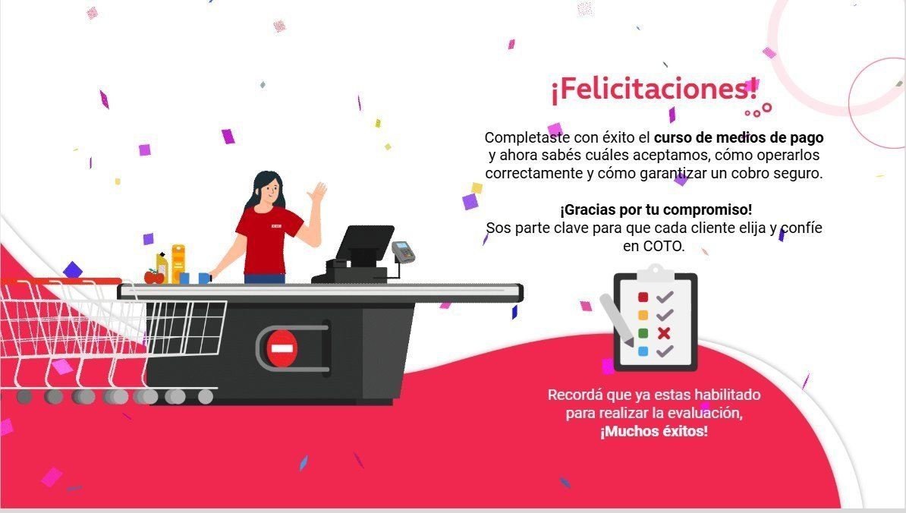
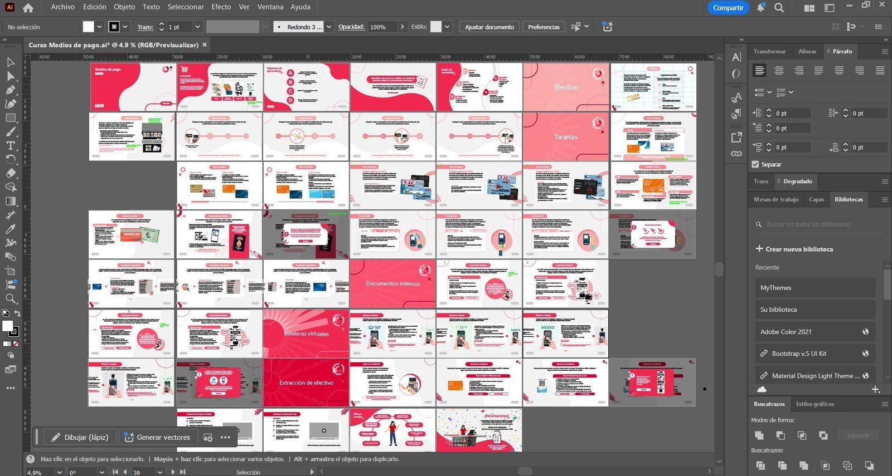
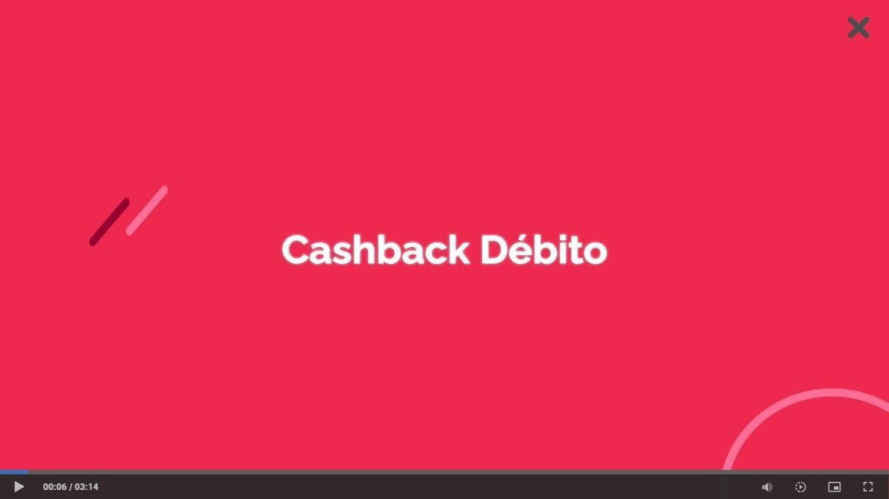
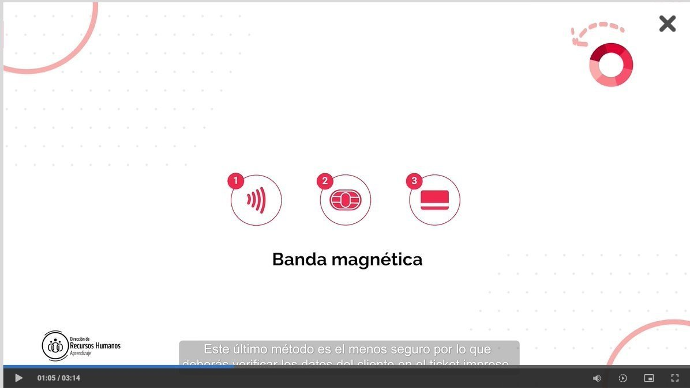

Caso 03 · COTO CICSA · Diseño · Dirección · Producción
El método, de punta a punta.
De todos los cursos que produje, Medios de Pago es el que mejor condensa cómo trabajo: guion, diseño visual, interactividad y video propio filmado en sucursal. Cuatro etapas, un flujo, un resultado que llega a más de cinco mil operadores de punto de venta.
Cliente
COTO CICSA
Período
2019 → Hoy
Rol
Diseño · Dirección · Producción
Equipo
04 personas
Participantes totales
19.852
Áreas formativas
16+
Equipo
4
Años operando
+7
01 · El método, en un proyecto real
Cuatro etapas, un proyecto.
Elegí Medios de Pago — inducción para nuevos operadores de punto de venta — como caso central del portfolio porque condensa mi método completo en un solo proyecto: guion, sistema visual, interactividad y producción audiovisual propia. Su público son jóvenes de veinte años en promedio — una generación a la que hay que llegarle con dinámica, no con bullets.
01 · Guion
Guion y estructura
Documento maestro con el contenido por unidad y diapositiva. Trece páginas organizan tres unidades temáticas con imágenes de referencia y notas de producción.
02 · Diseño
Diseño visual
Storyboard completo. Veintisiete escenas como sistema unificado: paleta, tipografía consistente, infografías propias.
03 · Interactividad
Armado interactivo
Capas, accionadores hover y línea de tiempo sincronizada con audio. Cada elemento aparece cuando tiene que aparecer.
04 · Video
Producción audiovisual
3:14 minutos rodados en dos sucursales reales, con locución, subtítulos, gráficas y cortinillas.
Alcance · 19.852 participantes
Este método, aplicado en sistema, alcanza a casi veinte mil colaboradores en toda la compañía. La escala obliga a pensar el diseño instruccional como un proceso replicable, no como una pieza única.
02 · Anatomía de un proyecto
Adentro de un curso.
Así se ve el método una vez aplicado: veintisiete escenas diseñadas como sistema unificado, con producción multimedia propia de punta a punta.
Área
Punto de Venta
Inscriptos
5.553
Diapositivas
27
Video propio
3:14
Anatomía de las diapositivas.
Veintisiete escenas diseñadas como sistema unificado: paleta, tipografía consistente, infografías propias, productos fotorrealistas y elementos de identidad institucional.
01 · Portada02 · Efectivo
03 · Validez04 · Billeteras virtuales

27 · Cierre — mensaje final y habilitación para la evaluación
Evaluación final.
Cuestionario de 10 preguntas, 45 minutos de duración, validación del aprendizaje antes de cerrar el curso.
03 · Detrás del método
La organización antes del software.
Las herramientas puntuales cambian de proyecto a proyecto — lo que no cambia es el orden. Cada curso vive en una estructura de carpetas idéntica: animaciones, audios, contenido, crudos, diseño, evaluación, portadas. Una nomenclatura común que permite que cualquier integrante del equipo pueda retomar un proyecto sin fricciones.
Illustrator · Diseño

Storyline · Interactividad
04 · El video
Cuando el aula se vuelve set.
Para Medios de Pago dirigí, filmé y edité Operaciones Especiales: una pieza de tres minutos catorce segundos rodada en sucursal con operadores reales. Idea, guion, dirección, cámara y edición — todo del mismo equipo que diseña el curso.
00:06 · Intro

01:05 · Banda magnética

Créditos · 3:14
Idea, guion, dirección, cámara, edición y motion: Damián Lencina. Filmado en sucursal — cámaras de frío, líneas de caja, depósitos — porque un curso resuena más cuando se graba donde la gente realmente trabaja.
Sobre el método
"Pensar cada curso como una experiencia y cada video como una pequeña película. Esa doble mirada es lo que define mi forma de trabajar."